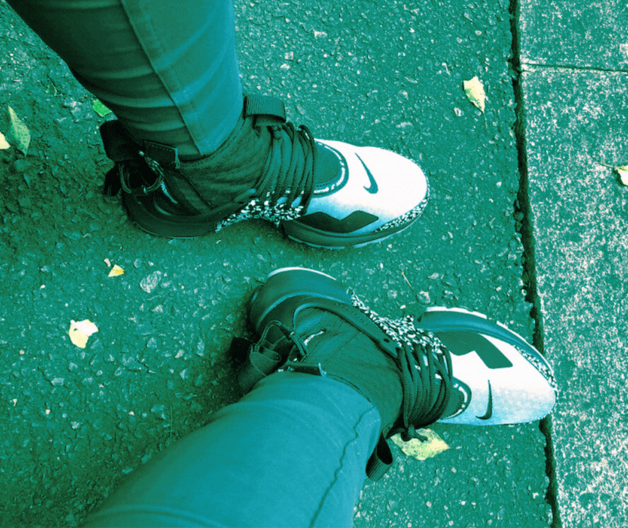
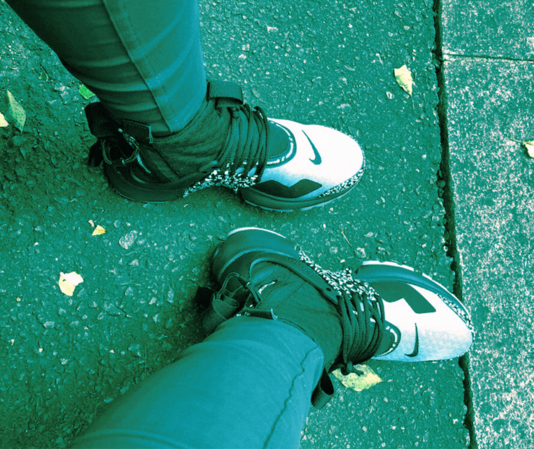
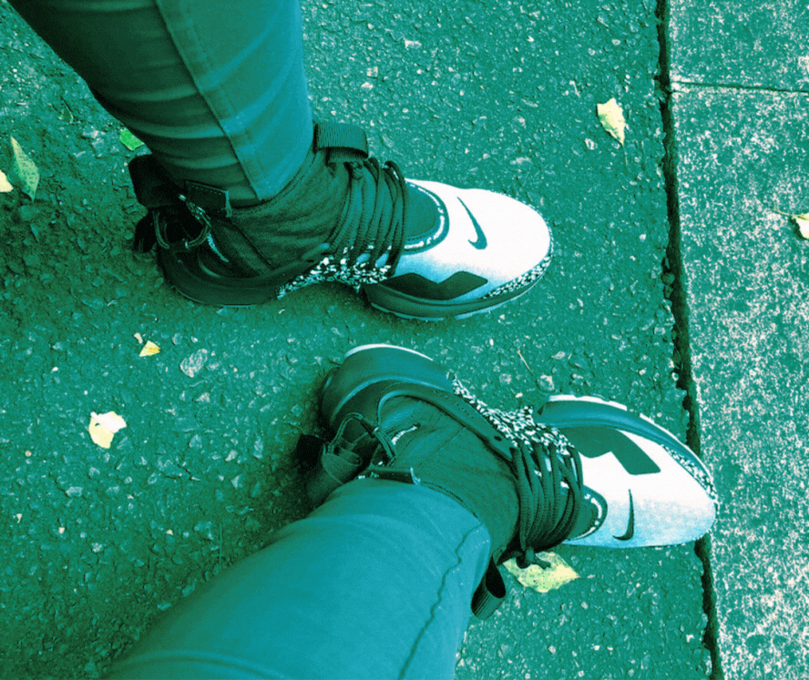
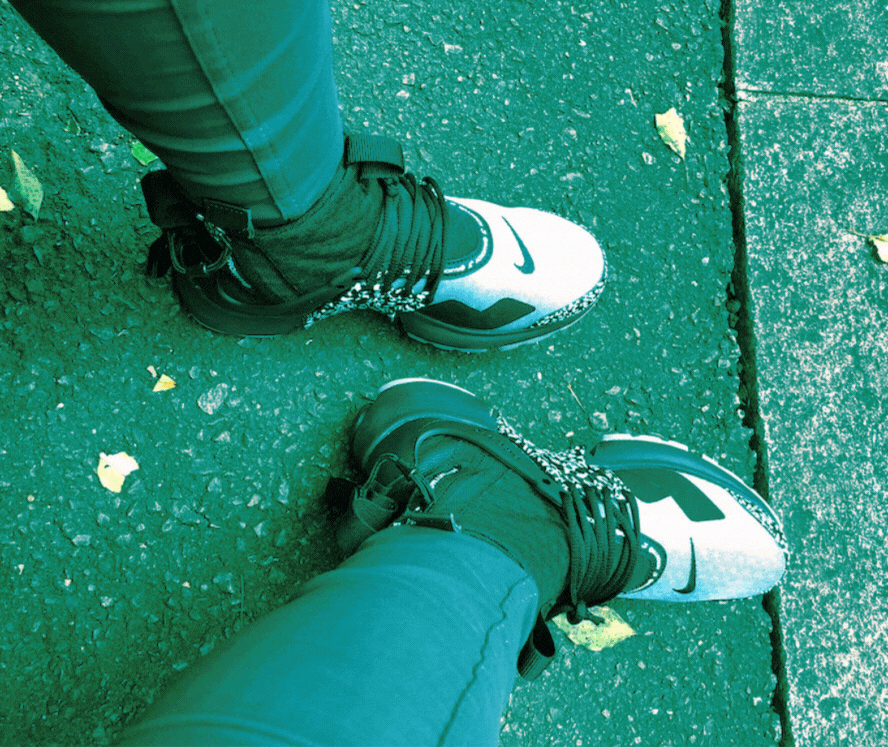

This is Phoebe Jaysa Julao. Her friends and family call her Pheebs. Her birthday is on January 24th and she's an Aquarius. She was born and raised in San Francisco. Phoebe also moved around the Bay growing up, living in places like South San Francisco and San Mateo. She currently lives in Hercules with her dog, Hiero. Phoebe is an avid collector of sneakers, hats, vinyls and random stickers. She is also a foodie who enjoys trying new dishes and going to her favorite local spots or going to food festivals. Phoebe really likes spicy food and trying random convenience store snacks. Phoebe also played basketball growing up and loves Bay Area team sports like the Giants, Warriors, Niners, and Sharks so you may find her watching live games or at a sports bar.
Currently Phoebe is a Visual Communications Design major student at SFSU. She enjoys mixed media art such as painting, sculpture, and black and white photography; however, Phoebe attributes a generous amount of screen time using her various digital devices. Phoebe's digital time capsule is a glimpse of her existence in her little corner of the digital world, where everyday apps and media play a daily role in her life as a design student. Though Phoebe has many interests and activities she enjoys, some of which you may read more about on this site, is a base illustration of what digital apps and programs keep her creative, motivated, and mostly relaxed. Feel free to browse and click on the other tabs to check out more about Phoebe's digital identity.
Let's talk about the fuel that powers up Phoebe's brain and creativity: coffee (and a few beverages she likes for variety and good measure.) Beverage tech is a true gift in her opinion due to the benefits of their individual reward points system, in-app promotions, and order and pay options are seamlessly provided through these mobile apps while she's brainstorming her design projects. They assist Phoebe's day by saving her favorite and frequent orders on a list. Hope you were able to grab a nice drink for yourself as well! Knowing Phoebe she would suggest an iced Ginger Snap or a raspberry mocha. Maybe an Oasis Vibe Celcius? That one's pear flavored.